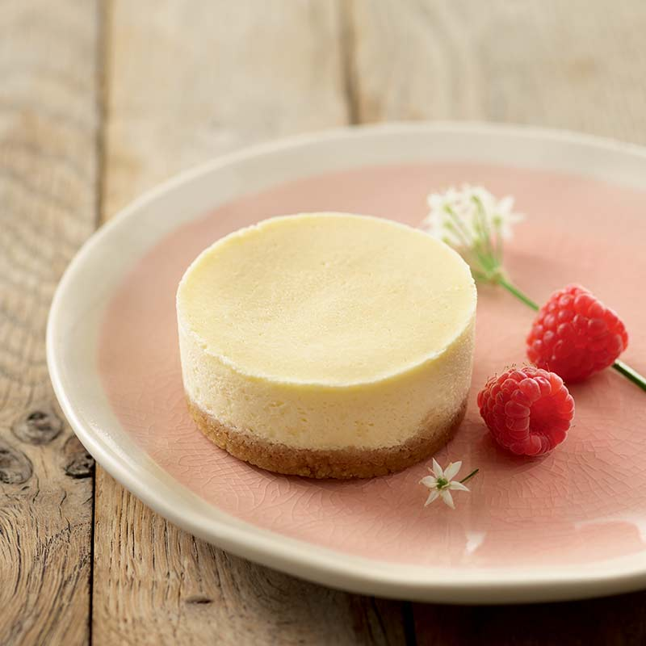

CHEESECAKE

Cheesecake is a sweet dessert that consists of one or more layers, with the main layer being a mixture of soft, fresh cheese, eggs, and sugar.
The bottom layer usually consists of a crust or base made from crushed cookies, graham crackers, pastry, or sometimes sponge cake.
Cheesecakes can be prepared baked or unbaked, and are often flavored with vanilla, lemon, chocolate, or other flavors, and can be topped with fruit, whipped cream, nuts, cookies, chocolate syrup, or other ingredients.
Cheesecakes are enjoyed worldwide, with many regions having their own unique versions and flavors.
Ingredients
- Cream Cheese - 4 cups (softened)
- Sugar - 1 cup
- Eggs - 3 large
- Vanilla Extract - 1 teaspoon
- Sour Cream - 1 cup
- Graham Cracker Crumbs - 1.5 cups
- Unsalted Butter (melted) - 1/3 cup
Steps
- Preheat your oven to 325°F (165°C).
- In a medium bowl, mix graham cracker crumbs and melted butter until well combined. Press the mixture firmly into the bottom of a 9-inch springform pan to form the crust.
- In a large bowl, beat the cream cheese and sugar together until smooth.
- Add the eggs, one at a time, beating well after each addition. Stir in the vanilla extract and sour cream until smooth.
- Pour the cream cheese mixture over the crust in the springform pan.
- Bake in the preheated oven for about 50-55 minutes, or until the center is almost set and the edges are lightly browned.
- Turn off the oven, and let the cheesecake cool in the oven with the door slightly ajar for about 1 hour.
- Chill in the refrigerator for at least 4 hours, or overnight.
- Once chilled, remove the cheesecake from the springform pan, top with your choice of toppings, slice, and enjoy!